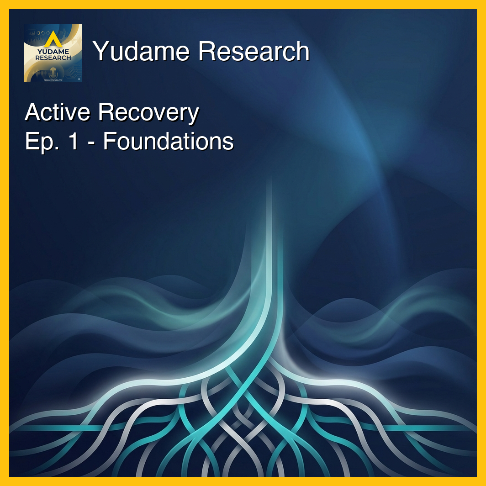
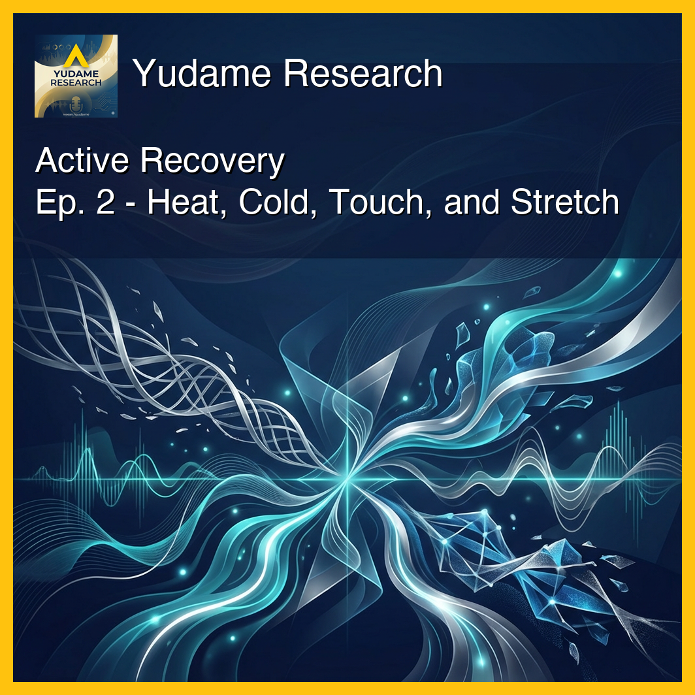
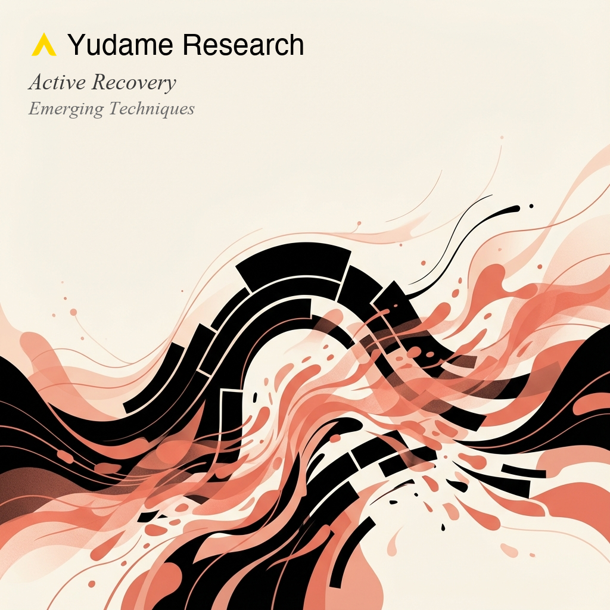
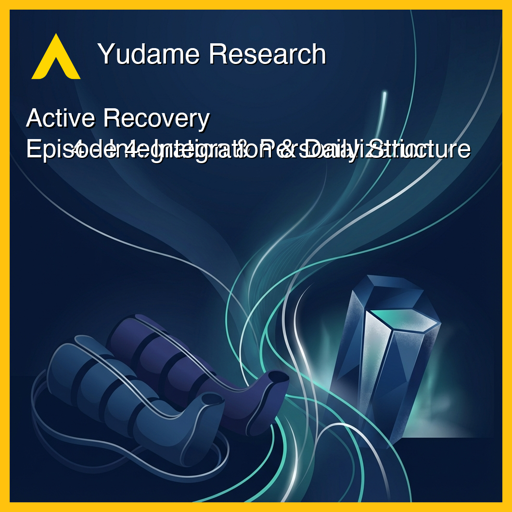

Active Recovery
Evidence-based recovery optimization for the fit 40-year-old athlete.
Episodes

Why the active recovery "paradox" challenges gym wisdom: studies show active recovery clears lactate faster yet produces identical long-term fitness gains as passive rest.
More
Reveals what actually changes for trained 40+ athletes (hint: it's not protein requirements), why a $20 foam roller delivers 80% of the benefits of expensive tech, and the three evidence-based principles that separate marginal gains from foundational recovery. Explores active vs. passive recovery, compression therapy evidence, post-workout nutrition fundamentals, circadian alignment, and injury prevention strategies.

Cold water immersion reduces soreness but blunts muscle growth by 17%. Stretching provides 0.52-point improvement on a 100-point scale. The central paradox: feeling better today may undermine long-term adaptation.
More
Examines stretching, cold water immersion, heat therapy, and manual therapies. Details the CWI trade-off: 10-15 minutes at 11-15°C reduces soreness but suppresses Type II fiber growth by 17%. Covers heat shock protein activation through sauna, contrast water therapy protocols, and why simple foam rolling delivers 80% of benefits of expensive compression devices.

The $3.1 billion recovery tech industry faces a paradox: interventions that improve biomarkers often fail to enhance actual performance, and industry-sponsored studies are 27% more likely to report favorable results.
More
Investigates neuromuscular electrical stimulation, photobiomodulation (red/infrared light), and pneumatic compression devices where simple active recovery outperforms $1000+ devices. Explores the biomarker deception, sleep extension as master intervention (effect sizes -0.23 to -1.17), and industry funding problems.

Building a personalized recovery framework that fits your training volume, recovery capacity, and competitive goals.
More
Synthesizes evidence into actionable frameworks. Details the 4-tier recovery hierarchy: sleep extension, proper nutrition, active recovery protocols, and targeted modalities. Includes personalization based on training volume, recovery markers (HRV, subjective readiness), and competitive phase. Addresses the aging athlete reality: recovery capacity declines 1-2% annually after 40.